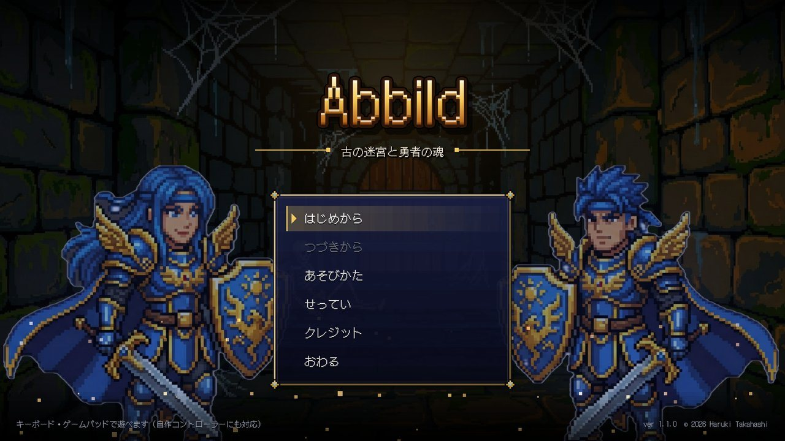
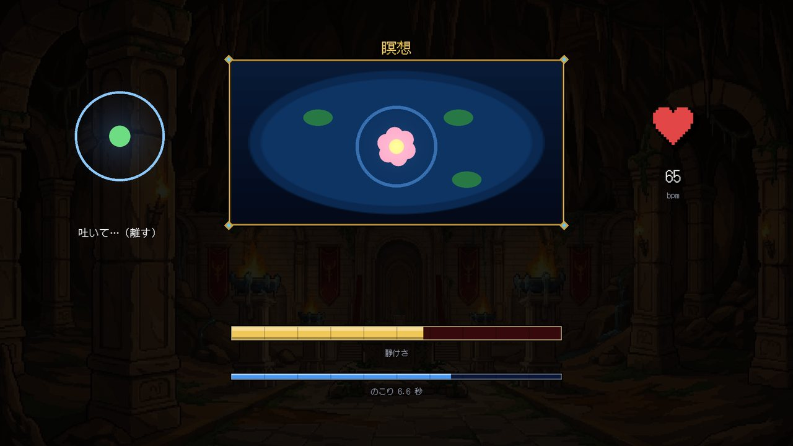
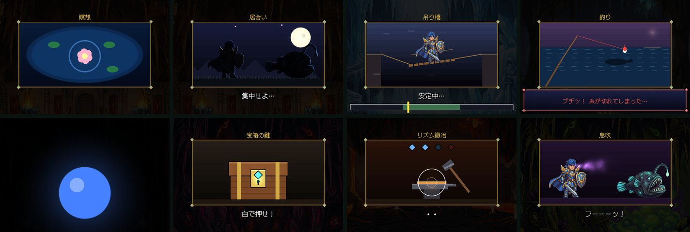
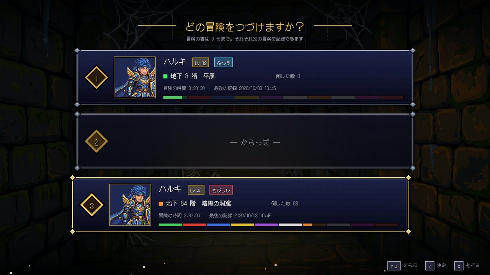
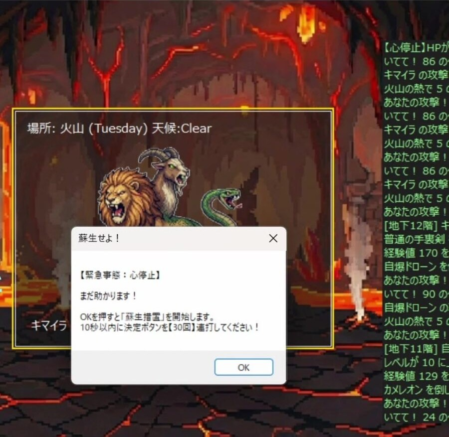

Abbild
心拍・振り・傾き・息で戦う、100階層のダンジョンRPG。Arduinoで作ったコントローラーで体を使って遊べるほか、キーボードやゲームパッドにも対応しています。WinFormsで作った最初の版を、C#とMonoGameで一から作り直しました。


概要
地下1階から100階まで、1階ごとに1戦するダンジョンRPGです。10階ごとにボスがいて、平原・火山・氷河・毒の沼など10種類のバイオームごとに、効果や弱点の属性が変わります。敵は100種類以上います。
最大の特徴は、戦闘の要所が体を使うミニゲームになっていることです。敵ににらまれたら心を静めて気配を消し、居合いでは合図の瞬間に反応し、凍りついたら息を吹きかけて溶かします。最初の能力も、キャラ作成のときに心拍・振った回数・連打の回数を測って決まります。
| プラットフォーム | Windows デスクトップ(MonoGame DesktopGL / .NET 10) |
| 開発形態 | 個人開発 |
| 構成 | ルールだけの Core ライブラリ / MonoGame の画面 / xUnit テストと自動プレイヤー / Arduino のスケッチ |
| ハードウェア | Arduino + 脈波センサー・加速度センサー(ADXL335)・温湿度センサー(DHT11)・ボタン・RGB LED・ブザー |
| ソースコード | GitHubで公開(閲覧用。改変・再配布は不可) |
構成図
データの流れに沿って、部品が順に光ります。
回路図
3D の部品を読み込んでいます
- 電源
- GND
- アナログ
- デジタル
- I²C
ファームウェア（firmware/AbbildController）のピンの割り当てにもとづく配線です。ボタンは内部プルアップで、押すと GND につながります。RGB LED はカソードコモンで、各色に電流制限の抵抗を入れます。OLED は任意です。
ブラウザーで遊ぶ
ブラウザー版 haru-ki417.github.io/Abbild/ — 「はじめる」を押すだけで、スマホ・タブレット・パソコンで遊べます。
Windows版と同じゲームのソースを、MonoGame互換のKNI(WebGL・WebAudio)とBlazor WebAssemblyで動かしています。プラットフォームごとに違うのは、シリアル通信の置きかえ・画像の透明度のかけ方・終了の処理・画面のボタンの4か所だけです。
- 操作: キーボード・ゲームパッド(Gamepad API)はWindows版と同じ。スマホでは画面に十字キーと「決定・もどる・息・メニュー」のボタンを出す
- セーブ: 冒険の書と設定は、そのブラウザーの中(localStorage)にだけ残る
- BGMはなし: 音源の利用規約で公開の場所に置けないため。効果音はプログラムで合成しているので鳴る
- 自作コントローラーは使えない: ブラウザーからはシリアルポートを開けないため、体の入力は代わりの操作で行う
体を使う20種類のミニゲーム
ミニゲームは、最初のWinForms版で考えたものを中心に20種類あり、それぞれ心拍・振り・傾き・息・ボタンのどれを使うかが決まっています。同じ「心拍」でも、凝視では落ち着くこと、バーサークでは高ぶることが求められます。

- 心拍: 瞑想、敵の凝視、交渉、バーサーク、キャラ作成の「心」
- 振る・傾ける: 気合ため、吊り橋、第六感(ダウジング)、居合い
- 息: 凍結を溶かす、息吹(湿度センサーに息を吹きかける)
- ボタン: 心眼(暗闇で光と音を頼りにかわす)、宝箱の鍵、リズム鍛冶、蘇生
自作コントローラーとキーボードの両対応
体の入力は「心拍・高ぶり・振った回数・傾き・息・ボタン」という1つの形にまとめ、ミニゲームはその形だけを見て判定します。入力元がコントローラーでもキーボードでも、ゲーム側は区別しません。
キーボードやゲームパッドでは、← → の交互押しで「振る」、押し続けで「傾ける」、Cキーで「息」を表します。心拍は、呼吸のガイドに合わせてボタンを押す・離すことで落ち着き、連打で高ぶるシミュレーションにしました。
- コントローラーとは9600bpsのシリアル通信で、1秒に20回、心拍・ボタン・3軸加速度・湿度などを1行で送る
- 起動すると、つながっているポートを自動で探す
- ゲームからコントローラーへも、LEDの色や効果音を送り返す
- WinForms版のころの形式も読めるので、前のコントローラーもそのまま使える
- ESPなどから外の天気を送ると、ゲームの天気になる(晴れなら炎が強い、雨なら氷が強い)
ルールと画面を分ける
戦闘のルールは画面に依存しないCoreライブラリにまとめ、行動の結果を「ダメージ」「メッセージ」「レベルアップ」といった出来事のリストとして返すだけにしました。画面側はそのリストを順に演出として再生します。これにより、演出を作り込んでもルールは単体テストで確かめられます。
難しさは、自動プレイヤーに何百回も遊ばせて調整しました。ミニゲームの成功率が6割の人のクリア率で比べています。
| やさしい | 約9割がクリア(蘇生のチャンス5回) |
| ふつう | 約5割がクリア(蘇生のチャンス3回) |
| きびしい | 1割未満(成功率9割の人で約5割、蘇生のチャンス1回) |
- xUnitによるテスト78件。GitHub Actionsでプッシュのたびにビルドとテストを実行
- 決まった画面を順に撮影するモードと、でたらめな操作で遊び続けるモードで、見た目と落ちないことを確認
- 冒険の書(セーブ)は3冊。前の版のセーブは最初の起動で1冊目へ移す
演出
ドット絵の背景と敵に、ロゴの文字が1字ずつ落ちてくるタイトル、ひし形のワイプによる場面転換、攻撃のカットイン、数字が1桁ずつ跳ねるダメージ表示、ボス前の警告などの演出を加えました。効果音はその場で合成しています。

素材と権利
BGMはOpenTracksの曲を使っています。規約で、遊ぶ人が音声ファイルとしてかんたんに取り出せる状態での利用が禁止されているため、曲をそのまま置かず、名前ごとの鍵でかき混ぜて1つのファイルにまとめ、ゲームの中で読み出すようにしました。公開しているリポジトリには、BGMそのものは入れていません(BGMがなくても遊べます)。
キャラクターや背景の画像はGoogle Geminiで作成しました。使っている素材ごとに利用条件を確かめ、一覧にまとめています。
「心停止」から始まる蘇生イベント
HPが0になっても、すぐにはゲームオーバーになりません。「心停止」と表示され、10秒以内に決定ボタンを規定の回数だけ連打すると蘇生できます。蘇生するたびに必要な回数は増え、チャンスの回数は難しさで変わります。
WinForms版から作り直した理由
最初の版はWinFormsで作り、脈拍センサーでの能力決定や、コントローラーを振る・傾ける・息を吹きかけるミニゲームの多くをこの時点で形にしました。一方で、ミニゲームの説明はメッセージボックスで出し、ルールと画面が1つのフォームの中に混ざっていたため、テストができず、体を使う場面はコントローラーの値を直接読んでいました。そこで、ルール・画面・入力を分けてMonoGameで作り直しました。
| WinForms版 | MonoGame版 | |
| ミニゲーム | メッセージボックスで説明して計測 | ゲーム画面の中で、絵と呼吸のガイドつきで遊ぶ(20種類) |
| 入力 | Arduinoのコントローラー | コントローラー / キーボード / ゲームパッド |
| 作り | フォームにルールと画面が混在(テストなし) | ルールをCoreに分離、テスト78件とCI |
| 演出 | フォームに画像とダイアログを重ねて表示 | カットイン、場面転換、跳ねるダメージ表示、合成の効果音 |
